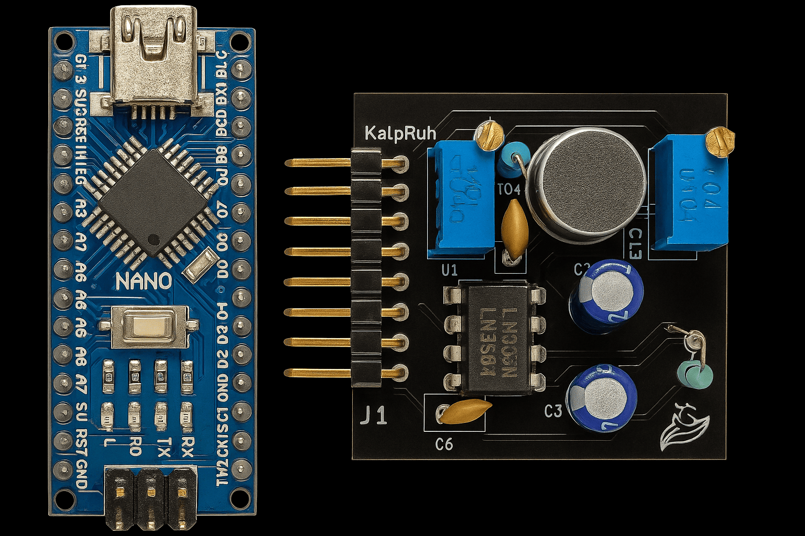
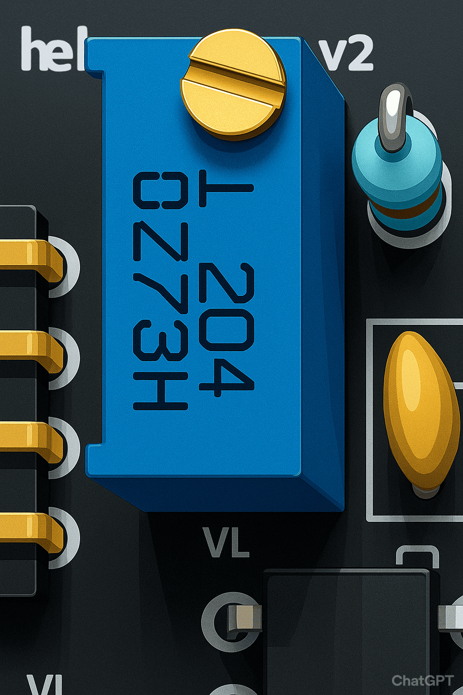
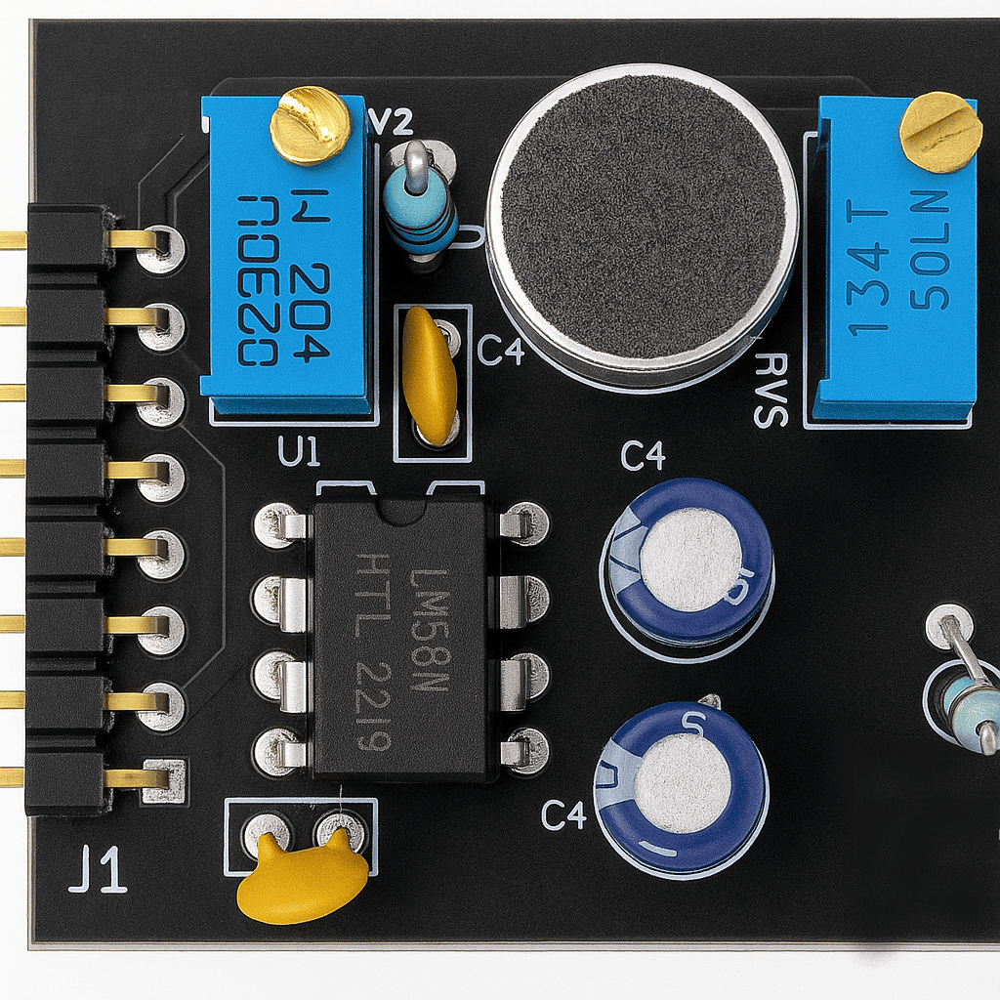
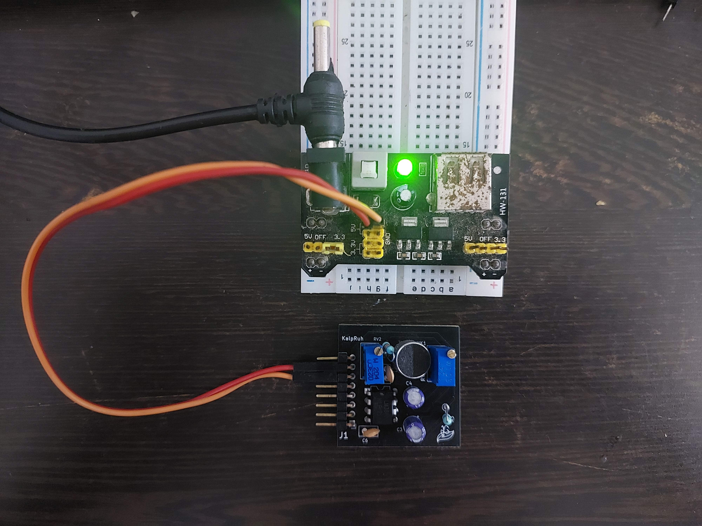
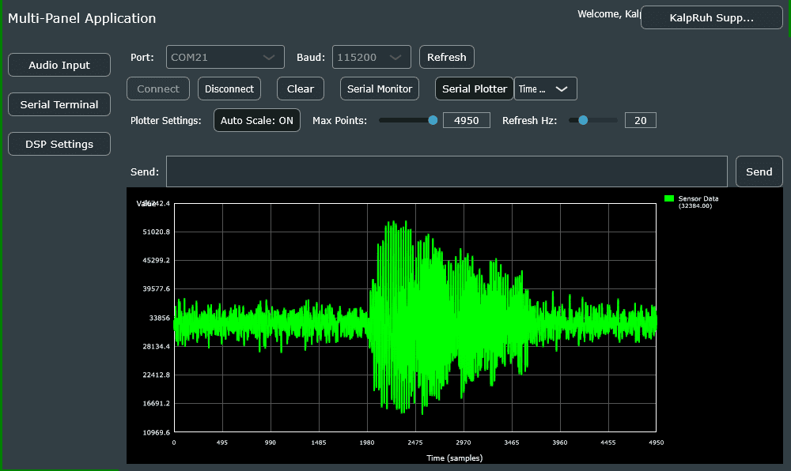

Hardware Specifications¶
PCB Overview¶
The Kaush Sound Sensor v1.0 is built on a compact, professionally designed PCB that integrates all necessary components for high-quality audio signal processing.
Physical Dimensions¶

Note that all dimensions are in mm
Size Specifications¶
- Length: [Insert measurement] mm
- Width: [Insert measurement] mm
- Height: [Insert measurement] mm (including components)
- Weight: [Insert weight] grams
- PCB Thickness: 1.6mm (standard)
Size Comparison¶

Kaush Sound Sensor compared to Arduino Nano
Component Breakdown¶
Primary Components¶
1. LM386 Audio Amplifier IC¶
- Function: Low voltage audio power amplifier
- Gain Range: 20x to 200x (adjustable)
- Supply Voltage: 4V to 12V
- Output Power: Up to 325mW
- Features:
- Low quiescent current (4mA)
- Wide supply voltage range
- High input impedance
- Excellent signal-to-noise ratio
2. Electret Microphone¶
- Type: Omnidirectional electret condenser microphone
- Frequency Response: Optimized for human voice (300Hz - 3.4kHz)
- Sensitivity: High sensitivity for distant sound detection
- Power Requirements: Low power consumption
- Mounting: PCB surface mount
3. Dual Potentiometer System¶
Coarse Adjustment (200K Potentiometer)¶

- Value: 200kΩ
- Function: Pre-amplification signal adjustment
- Location: Near microphone input
- Adjustment Range: Input signal attenuation/boost
- Usage: Set baseline sensitivity level
Fine Gain Control (10K Potentiometer)¶

- Value: 10kΩ
- Function: LM386 gain adjustment
- Gain Range: 20x to 200x amplification
- Location: Connected to LM386 gain pins
- Usage: Fine-tune output amplitude
4. Signal Conditioning Circuit¶
- Input Filtering: High-pass filter for noise reduction
- Output Filtering: RC low-pass filter option
- Coupling Capacitors: DC blocking for clean signal transfer
- Bias Network: Proper DC biasing for optimal performance
PCB Layout Analysis¶
Front Side (Component Side)¶

Front side showing component placement
Key Features: - Optimized component placement for minimal noise - Short signal paths for better performance - Ground plane for EMI shielding - Clear component labeling
Back Side (Solder Side)¶

Back side showing traces and ground plane
Key Features: - Continuous ground plane - Minimal via usage - Clean trace routing - Proper isolation between analog and digital sections
Pin Configuration¶

Detailed pin configuration with labels
Power Pins¶
- VCC: Positive power supply (4V - 12V)
- GND: Ground reference (0V)
Signal Output Pins¶
- FILTERED_OUT: RC filtered analog output
- RAW_OUT: Unfiltered analog output
- PRE_AMP: Signal before LM386 amplification
Pin Specifications Table¶
| Pin Name | Type | Voltage Range | Function | Notes |
|---|---|---|---|---|
| VCC | Power | 4V - 12V | Positive supply | Current: ~10mA typical |
| GND | Power | 0V | Ground reference | Connect to system ground |
| FILTERED_OUT | Analog Output | 0V - VCC | RC filtered signal | Recommended for most applications |
| RAW_OUT | Analog Output | 0V - VCC | Unfiltered signal | Maximum bandwidth |
| PRE_AMP | Analog Output | 0V - VCC | Pre-amplification signal | Lower amplitude |
Power Supply Requirements¶

Proper power supply connection methods
Voltage Specifications¶
- Operating Range: 4V to 12V DC
- Recommended: 5V (USB) or 9V (battery)
- Current Consumption:
- Quiescent: 4mA
- Peak: 15mA (during loud signals)
- Ripple: <100mV peak-to-peak recommended
Power Supply Options¶
- USB Power (5V): Direct connection from USB port
- Battery Power: 4x AA (6V) or 9V battery
- Wall Adapter: Regulated DC adapter (6V-12V)
- Microcontroller Supply: Share power with Arduino/ESP8266
Signal Flow Diagram¶
graph TD
A[Sound Waves] --> B[Electret Microphone]
B --> C[200K Potentiometer<br/>Coarse Adjustment]
C --> D[Pre-Amplification Circuit]
D --> E[PRE_AMP Output]
D --> F[LM386 Amplifier]
F --> G[10K Potentiometer<br/>Gain Control]
G --> H[Output Buffer]
H --> I[RAW_OUT]
H --> J[RC Filter]
J --> K[FILTERED_OUT]Signal Characteristics¶
Output Signal Properties¶
- Baseline: VCC/2 (Half supply voltage)
- Peak-to-Peak Amplitude:
- Close range (<10cm): Up to 3V
- Medium range (10-30cm): 1.5-2V
- Long range (>30cm): 0.5-1.5V
- Frequency Response: 20Hz - 20kHz
- Signal-to-Noise Ratio: >60dB
Waveform Characteristics¶

Typical output waveform showing baseline and amplitude
Adjustment Guide¶
Initial Setup Procedure¶
- Power Connection: Apply 5V-9V to VCC/GND
- Coarse Adjustment: Set 200K pot to middle position
- Fine Adjustment: Set 10K pot to minimum gain
- Testing: Gradually increase gain while monitoring output
- Optimization: Adjust both pots for desired sensitivity
Optimization Tips¶
- For distant sounds: Increase both potentiometers
- For close sounds: Reduce gain to prevent saturation
- For noisy environments: Use filtered output
- For maximum response: Use raw output
Environmental Specifications¶
Operating Conditions¶
- Temperature: -10°C to +70°C
- Humidity: 0% to 95% (non-condensing)
- Storage Temperature: -40°C to +85°C
Mechanical Properties¶
- Vibration Resistance: Good (solid PCB mounting)
- Shock Resistance: Standard electronic component levels
- Connector Type: Standard 0.1" pitch headers
Quality & Compliance¶
Manufacturing Standards¶
- PCB Standard: IPC-A-610 Class 2
- Component Quality: Industrial grade
- Testing: 100% functional testing
- RoHS Compliance: Lead-free manufacturing
Next Steps¶
Now that you understand the hardware specifications, let's move on to: - Getting Started Guide - Step-by-step setup - Pin Configuration Details - Wiring diagrams
Need help with hardware setup? Check our video tutorials or visit the troubleshooting section.